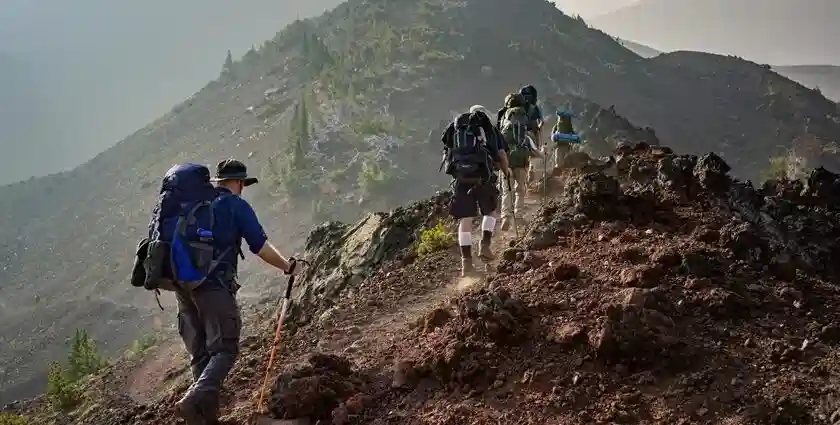
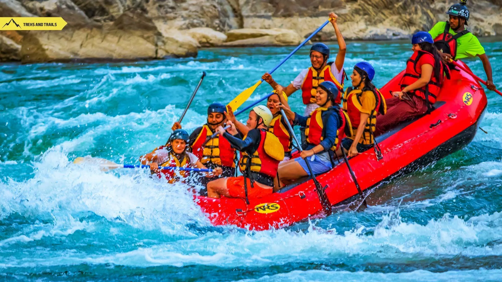
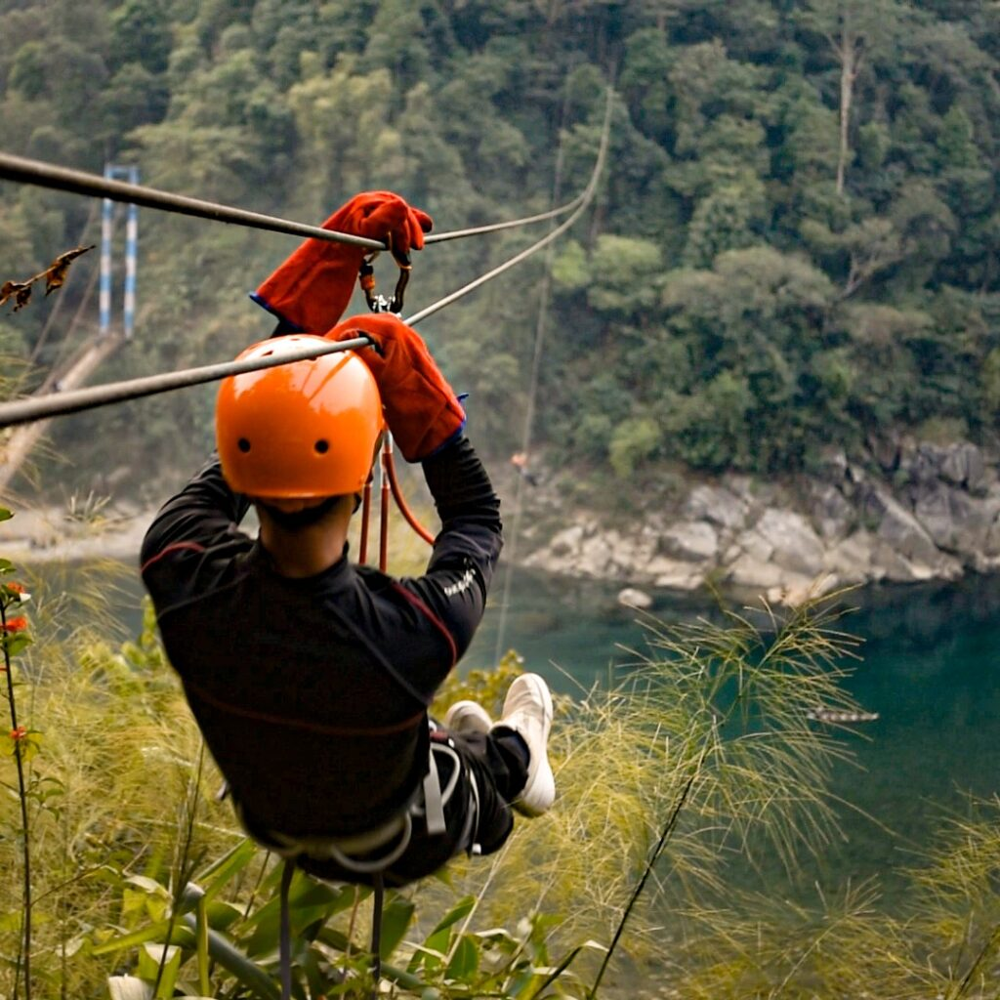
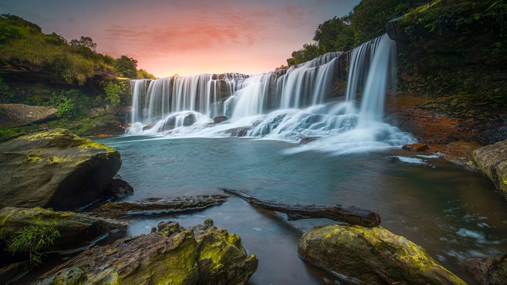
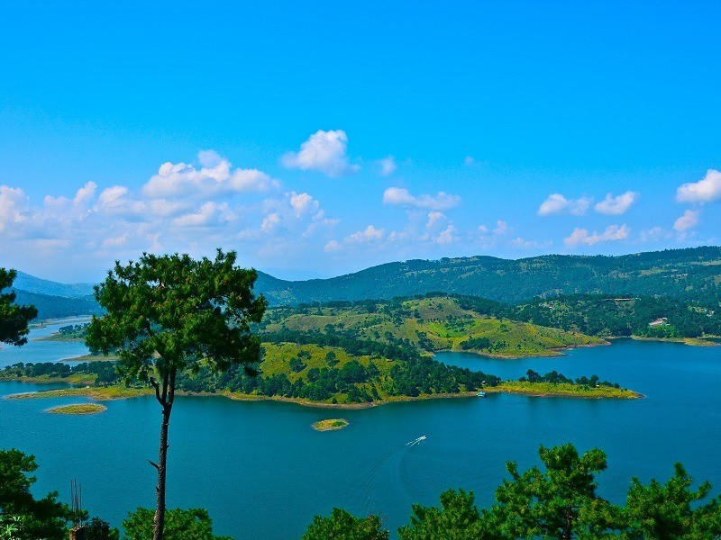
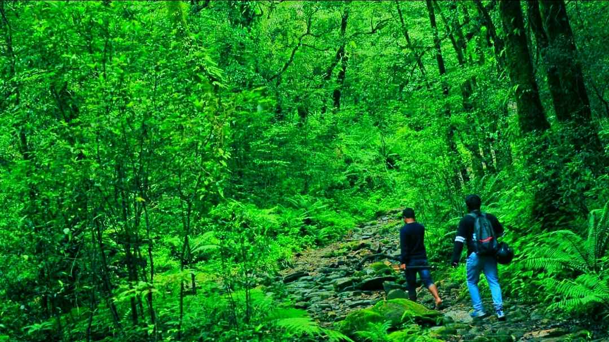
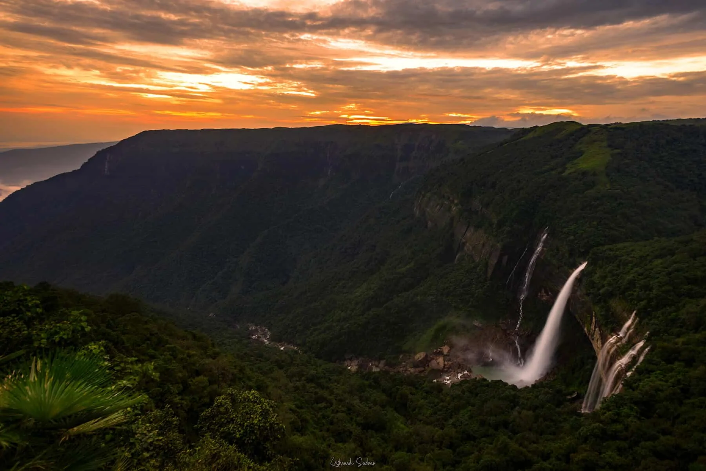
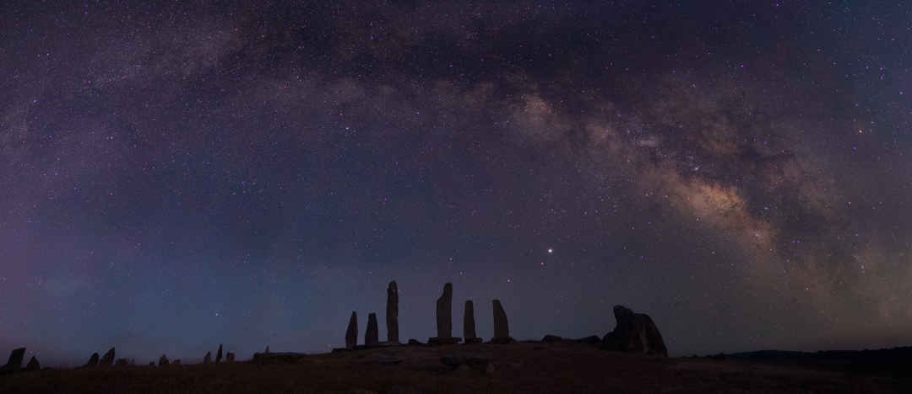

Trekking in Meghalaya takes you through misty hills, dense forests, and hidden villages surrounded by nature. Popular trekking routes lead to living root bridges, waterfalls, and scenic valleys filled with greenery. The cool climate and fresh mountain air make every trek refreshing and enjoyable throughout the year.

River rafting in Meghalaya is a thrilling adventure through fast-flowing rivers and beautiful mountain scenery. The crystal-clear waters surrounded by green hills create an exciting and refreshing experience for visitors. Popular rafting spots offer both gentle rides for beginners and challenging rapids for adventure seekers.

Ziplining in Meghalaya lets visitors soar above forests, valleys, and rivers while enjoying breathtaking aerial views. The adventure offers a perfect mix of excitement and scenic beauty in the middle of nature. Flying across lush green landscapes gives travelers a unique perspective of Meghalaya’s stunning environment.

Camping in Meghalaya offers peaceful nights surrounded by forests, hills, rivers, and fresh mountain air. Visitors can relax under the open sky while enjoying bonfires, music, and the sounds of nature.The cool weather and calm atmosphere create the perfect escape from busy city life. Camping in Meghalaya is ideal for travelers who love adventure, relaxation, and nature together.

The misty hills of Meghalaya create magical landscapes covered with clouds, greenery, and cool mountain air. Early mornings often reveal beautiful fog drifting across valleys and rolling hills. These peaceful hills offer stunning viewpoints perfect for relaxation and photography.

Meghalaya is famous for its spectacular waterfalls flowing through cliffs, forests, and deep valleys. During the monsoon season, the waterfalls become even more powerful and breathtaking to witness. Many waterfalls are surrounded by lush greenery, creating peaceful and scenic natural escapes.

The lakes of Meghalaya are known for their crystal-clear waters and peaceful natural surroundings. Many lakes are surrounded by hills, forests, and gardens that enhance their scenic beauty. Visitors can enjoy boating, relaxing walks, and breathtaking reflections of the sky on the water.

Forest walks in Meghalaya take visitors through dense green forests rich with wildlife and fresh mountain air. The peaceful trails are filled with birdsong, flowing streams, and beautiful natural scenery. Walking through bamboo groves and ancient trees offers a refreshing break from busy city life.

Sunrise spots in Meghalaya offer breathtaking views as golden sunlight slowly lights up the hills and valleys. The early morning mist creates magical scenery perfect for peaceful moments and photography. Watching the sunrise above the clouds is one of the most unforgettable experiences in the state.

Meghalaya is a paradise for landscape photography with its rolling hills, waterfalls, forests, and cloudy skies. Every corner of the state offers stunning natural views perfect for capturing unforgettable moments. The changing weather and misty atmosphere create dramatic and unique photography opportunities.

The forests of Meghalaya are home to diverse wildlife, colorful birds, and rare plant species. Nature lovers can explore wildlife sanctuaries filled with rich biodiversity and peaceful surroundings. Many areas protect endangered animals and preserve the natural beauty of the region.

The night sky in Meghalaya is incredibly beautiful with countless stars shining above peaceful hills and valleys. Away from city lights, the clear skies create perfect conditions for stargazing and night photography. Camping under the stars offers a calm and magical experience surrounded by nature. .